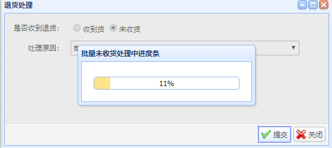

using System;
using System.Collections.Generic;
using System.Linq;
using System.Web;
using XXX.WMS.Core.Log;
using Microsoft.AspNet.SignalR;
namespace XXX.WebUI
{
public class SaleBackHub : Hub
{
private void Send(string connectionId, string percent)
{
// Call the addNewMessageToPage method to update clients.
try
{
Clients.Client(connectionId).updateProgressbar(percent);
}
catch (Exception ex)
{
LoggerManager.GetInstance().Fatal(ex);
}
}
public string GetConnectionId()
{
return this.Context.ConnectionId;
}
}
}
1 //使用外部方式调用Hub类方法
2 var saleBackHub = Microsoft.AspNet.SignalR.GlobalHost.ConnectionManager.GetHubContext<SaleBackHub>();
3 var percent = 0;
4 if (!string.IsNullOrWhiteSpace(requestDto.ProgressbarKey))
5 {
6 percent = (int)((decimal)++progressCount / (decimal)saleBackModelListCount * 100);
7 try
8 {
9 //调用前端action 更新进度条
10 saleBackHub.Clients.Client(requestDto.ProgressbarKey).updateProgressbar(percent.ToString());
11 }
12 catch (Exception ex)
13 {
14 throw;
15 }
16 }
using System;
using System.Threading.Tasks;
using Microsoft.Owin;
using Owin;
[assembly: OwinStartup(typeof(Frxs.WMS.Management.WebUI.Startup))]
namespace xxx.WMS.Management.WebUI
{
public class Startup
{
public void Configuration(IAppBuilder app)
{
// 有关如何配置应用程序的详细信息，请访问 https://go.microsoft.com/fwlink/?LinkID=316888
app.MapSignalR();
}
}
}
前端代码
对应页面引入signalR.js
<script src="@Url.Content("~/Scripts/signalR/jquery.signalR-2.0.3.min.js“)" type="text/javascript"></script>
<script src="~/signalr/hubs"></script>初始化signalR 连接 定义后端推送action 渲染进度条 本次用的是jeasyui 进度条弹窗
var chat;
var chatConnectionId;
function initchatHub() {
// Reference the auto-generated proxy for the hub.
chat = $.connection.saleBackHub;
$.connection.hub.logging = true;
// Get the user name and store it to prepend to messages.
// Set initial focus to message input box.
// Start the connection.
$.connection.hub.start().done(function () {
chat.server.getConnectionId().done(function (connectionId) {
chatConnectionId = connectionId;
});
});
// Create a function that the hub can call back to display messages.
chat.client.updateProgressbar = function (percent) {
// Add the message to the page.
if (parseInt(percent) <= 100) {
$.messager.progress('bar').progressbar('setValue', percent);
}
//var value = $.messager.progress('bar').progressbar('getValue');
};
}
function showProgressbar() {
$.messager.progress({
title: '测试进度条',
interval: 0 //每次进度更新之间以毫秒为单位的时间长度。默认值是 300。
});
}实际效果图

参考地址 https://docs.microsoft.com/zh-cn/aspnet/signalr/overview/